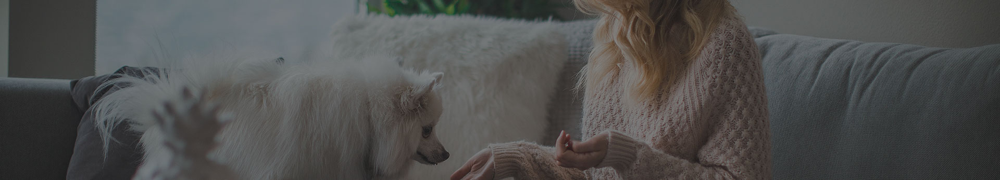

Giải pháp nhanh cho việc chăm sóc thú cưng hằng ngày
Chỉ 15 phút mỗi ngày với những thói quen đơn giản là đủ để bé luôn sạch sẽ, khỏe mạnh và vui vẻ.
Đọc tiếp
DLTheme Pet Care
Chỉ 15 phút mỗi ngày với những thói quen đơn giản là đủ để bé luôn sạch sẽ, khỏe mạnh và vui vẻ.
Đọc tiếpLần đầu đến spa dễ khiến cún hoảng sợ. Chuẩn bị đúng cách giúp bé thoải mái và yêu thích việc làm đẹp.
Đọc tiếpNuôi chó giúp giảm căng thẳng, tăng vận động và mang lại niềm vui mỗi ngày cho cả gia đình.
Đọc tiếpSắp xếp góc làm việc và lịch sinh hoạt hợp lý để vừa tập trung công việc, vừa không bỏ quên bé cưng.
Đọc tiếpVui chơi giúp mèo giải tỏa năng lượng, hạn chế cào phá đồ đạc và gắn kết hơn với chủ nuôi.
Đọc tiếpCâu chuyện dễ thương về chú chó mê âm nhạc và những điều thú cưng có thể học được từ âm thanh.
Đọc tiếp